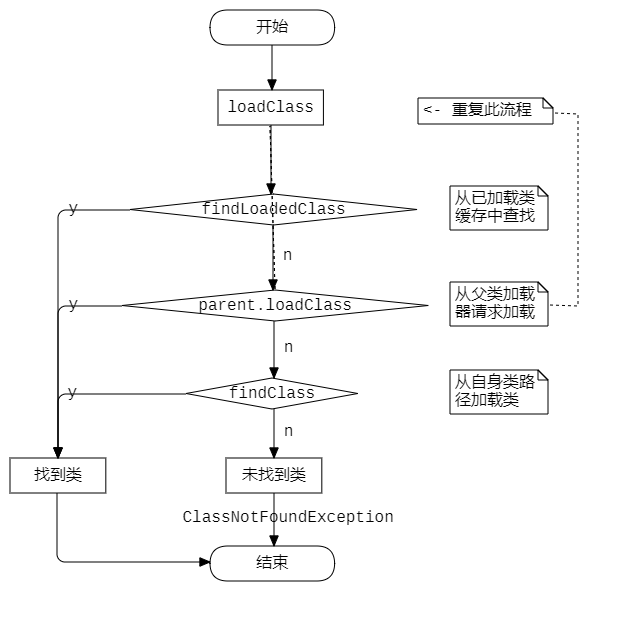
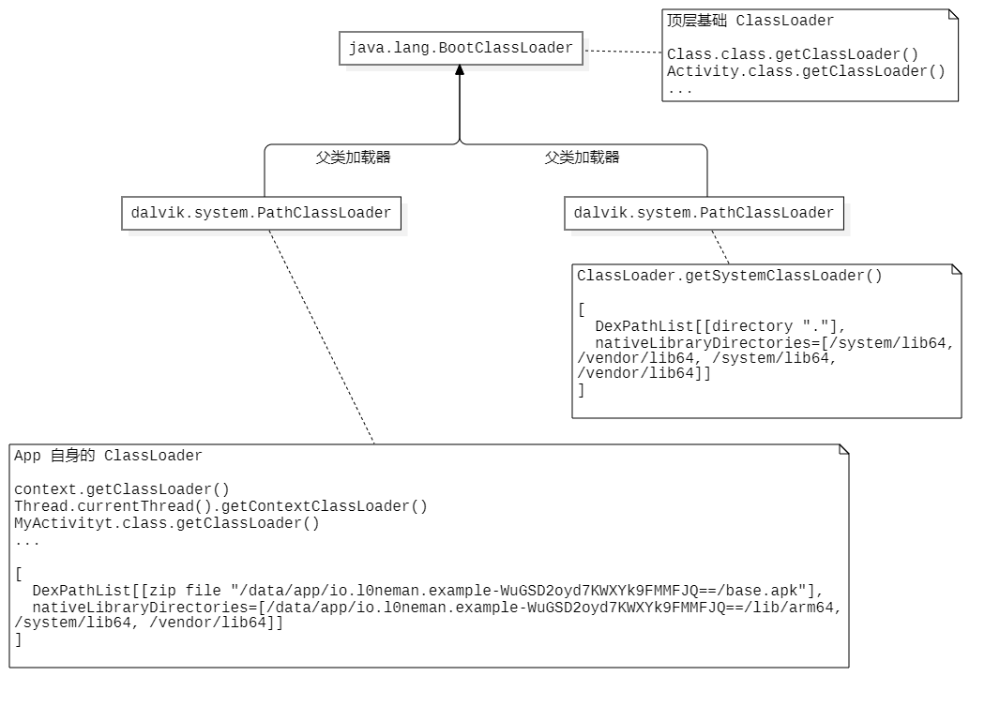

Android ClassLoader 简析
ClassLoader 加载机制
ClassLoader 是一个抽象类，它为 Java 虚拟机上运行的进程提供类加载的操作，它定义了类加载器的标准接口，具体加载类的逻辑，以及加载类的路径由其具体子类实现。
ClassLoader 对外提供一个 loadClass 方法，使用时调用此方法并传入符合 java 标准的全类名参数，将会返回一个 Class<?> 对象，通过查看 loadClass 方法的实现可以了解到类加载器的加载机制。
1 | // java.lang.ClassLoader |
从上述代码了解到，ClassLoader 加载机制基于一个叫“双亲委派模型”的东西，会优先从父加载器中加载类。
除了最顶层的 ClassLoader，其他 ClassLoader 都必须有一个父加载器。
为了清晰的表现此模型，使用流程图描述如下：

通常实现自定义的 ClassLoader 时，不建议重写 loadClass 方法，因为会导致破坏双亲委派模型，从而可能影响整个系统的稳定性，除非有明确理由和把握重写 loadClass，否则推荐重写 findClass 方法，符合双亲委派模型。
Android ClassLoader
Android 应用程序的类加载框架由三个核心 ClassLoader 支撑，下面是结构图：

- BootClassLoader 是系统级别的基础 ClassLoader，所有 Android 和 Java 定义的类型均为其负责加载，它作为最顶层的 ClassLoader，没有父类加载器。查看其类加载路径如下：
1 | export BOOTCLASSPATH /system/framework/org.dirtyunicorns.utils.jar |
可以看到，它加载的类型都是 Java 和 Android 提供的基础类库中的类型。
通过一些基础类型的 class 成员调用 getClassLoader() 方法可以获取到它，例如：
1 | Class.class.getClassLoader(); |
- 左下 ClassLoader 是应用进程的 ClassLoader，它的实现类型为
PathClassLoader，由于限制了类加载路径为应用程序的 apk 文件路径，它只能够加载应用程序本身 Dex 文件中的类型。
Android 系统在创建应用程序进程的时候将会创建这个 ClassLoader，并将其赋予应用程序进程。它的类加载路径如上图所示，为应用程序的 apk 文件路径，它的父类加载器为 BootClassLoader。
获取应用程序 ClassLoader 的方法为使用应用程序开发者自己定义类型的 class 成员的 getClassLoader() 方法，或者使用任意 context 的 getClassLoader() 方法获取，当前线程如果未主动指派 ClassLoader，那么默认也是应用程序的 ClassLoader。
1 | context.getClassLoader() |
- 右下 ClassLoader 是一个系统默认 ClassLoader，类加载路径为
.，还包含几个库路径。
获取这个 ClassLoader，可以调用 ClassLoader 的静态方法 getSystemClassLoader() 取得。
DexClassLoader
DexClassLoader 是 Android 提供给开发者使用的能够加载任意路径下的 Dex 文件包的一个 ClassLoader，它支持任意路径的 jar/zip/apk 文件。
下面是它的唯一构造方法：
1 | /** |
使用时传入相关参数，即可使用其对象的 loadClass 方法进行类加载操作。
提示
明确代码所处的 ClassLoader 环境，以及当前类所属的 ClassLoader 尤为重要。例如，当项目采用了自己实现的热更新方案时，应用包在远程用户的设备上运行，此时需要下发热更新包达到修复目标应用包（宿主）代码的目的，可能需要访问应用包内的类，那么此时需要清晰的知道，应用包的 ClassLoader 如何获取到，热更新包本身的 ClassLoader 与应用包的关系。否则很容易出现问题。
当一个 so 被一个 ClassLoader 加载起来时，另一个 ClassLoader 就无法加载这个 so 了。
http://androidxref.com/9.0.0_r3/xref/art/runtime/java_vm_ext.cc#922
探究
Android 应用程序的 ClassLoader 是在何时创建的？何时赋予给 Context？
一个类何时被初始化，怎样被初始化？
热更新、热修复技术方案解析。
Android ClassLoader 简析
https://l0neman.github.io/2020/07/07/android-classloader-简析/